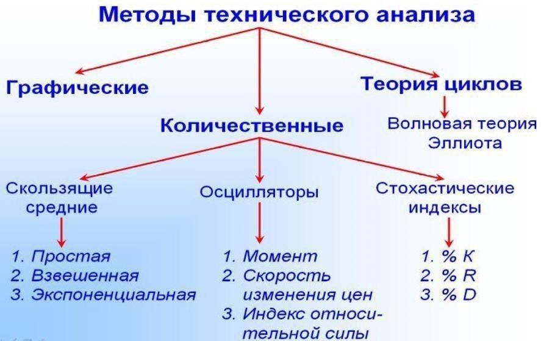

В мире трейдинга существует два основных направления анализа: Фундаментальный анализ и Технический анализ. Сегодня мы с вами проанализируем какой из них наиболее эффективный.
Что такое технический анализ?
Технический анализ – это анализ ценовых движений в прошлом для прогнозирования будущих изменений цены. Это очень эффективный метод анализа. На финансовых рынках движение цены периодически повторяется и подчиняется определенным закономерностям. Это происходит потому, что движение цены зависит о т действий людей, а люди всегда действуют по определенным шаблонам.
Основным инструментом для технического анализа являются данные о цене . Независимо от выбранного периода времени цена являются наиболее важным фактором. Трейдер принимает торговые решения, изучая текущее движение цены и постоянно сравнивая его с историей.
Технический анализ может применяться на многих различных рынках, включая фондовый рынок, валютный, товарный, рынок криптовалют. До тех пор, пока рынок обладает достаточным объемом ликвидности и не подвержен сильному внешнему влиянию, технический анализ может применяться самым эффективным образом.
Одним из примеров, когда технический анализ может быть не столь эффективным из-за недостатка ликвидности и склонности к внешним воздействиям – это рынок так называемых грошовых или мусорных акций.
Три основных принципа технического анализа, о который вы уже знаете:
1. Цена учитывает все.
2. Движение цены подчинено тенденциям.
3. История повторяется.
Цена учитывает все. Текущая цена отражает всю известную информацию, доступную участникам рынка. И любая новая информация, которая появляется, уже отражена в текущих ценах.
Движение цены подчинено тенденциям. На рынке существуют тенденции в движении цены и эти тенденции движутся неслучайным образом. Тренды появляются после периода консолидаций. Затем, когда тренд достигает своего пика, он, в конечном счете, возвращается в фазу консолидации, прежде чем на рынке вновь появляется новая фаза тренда.
История повторяется. Финансовые рынки демонстрируют повторяющийся, рекурсивный характер в своих ценовых данных. Хотя никакие две модели в истории цен не выглядят одинаково, в них может существовать сходство, которое нельзя объяснить ценовым шумом или случайностью. Эти повторяющиеся паттерны постоянно можно видеть на графиках в виде свечных моделей, импульсах движения цены, объеме и других формах ценовых данных.
Технический анализ – наиболее распространенный способ торговли на финансовых рынках. Он работает как самоисполняющееся пророчество. Если сотни тысяч трейдеров используют один и тот же тип анализа рынка, они будут торговать одинаково. Тот факт, что все трейдеры торгуют одинаково, заставляет цену двигаться в одном направлении.
В техническом типе анализа учитываются:
• Текущее состояние рынка: тренд или консолидация
• Уровни поддержки и сопротивления
• Технические индикаторы
• Свечные паттерны
Иногда вы можете слышать, что технический анализ – это больше искусство, чем наука. Когда мы пытаемся предсказать будущие движения цены с помощью технического анализа, может быть много нюансов, которые иногда могут привести к различным выводам.
Что такое фундаментальный анализ?
Фундаментальный анализ рассматривает и анализирует экономические данные. Экономические новости часто оказывают большое влияние на цену.
Это могут быть: инфляция, торговый баланс, ВВП, уровень безработицы и изменение процентных ставок центральными банками. На валютном рынке деятельность центрального банка пристально отслеживается фундаментальными аналитиками. Предстоящие решения по процентной ставке, встречи и выступления высокопоставленных чиновников центрального банка чрезвычайно важны для фундаментального трейдера.
Фундаментальные аналитики будут пытаться оценить общие рыночные условия, используя различные экономические отчеты. При этом они могут быть краткосрочными трейдерами, которые пытаются уловить колебания цен в периоды потенциально высокой волатильности, такие как отчет по занятости в несельскохозяйственном секторе США. Или они могут быть трейдерами с долгосрочной макроэкономической позицией, которые больше заинтересованы в многомесячных или многолетних трендах.
Фундаментальные трейдеры ищут ответы о том, почему экономические условия такие, какие они есть и пытаются оправдать свои прогнозы на основании анализа экономических данных. Технический трейдер, с другой стороны, гораздо меньше заботится о причинах и гораздо больше ориентируется на само движение цены.
Фундаментальный анализ использует экономические данные для прогнозирования движений валютах пар. Путем интерпретации экономических данных вы можете оценивать силу экономики для стран, валютами которых вы торгуете. Например, если в Еврозоне выходят сильные экономические данные, а в США слабые, вы можете рассматривать, что евро вырастет против доллара, и будете открывать длинные позиции по паре EUR/USD.
Как правило, трейдеры, которые торгуют по фундаментальному анализу, будут удерживать свои сделки в течение недель или даже месяцев. Экономические факторы обычно не вызывают немедленных всплесков в стоимости валют.
Одним из наиболее важных экономических показателей фундаментального анализа являются процентные ставки. Страны с высокими процентными ставками привлекают больше иностранных инвестиций. Если вам нужно было выбирать между процентной ставкой 0,5% или 5%, вы, очевидно, выберете 5%, чтобы вложить свои деньги.
Когда процентная ставка конкретной страны выше по сравнению с другими странами со схожими экономическими условиями, иностранные инвестиции и капитал будут поступать в страну с относительно более высокой процентной ставкой. Инвесторы всегда ищут более высокую доходность, и поэтому более высокая процентная ставка будет иметь тенденцию привлекать больше капитала с мировых рынков.
В течение более длительных периодов времени высокие процентные ставки влияют на стоимость валюты. Так что, если у США будет процентная ставка 2.25%, а у Европы будет процентная ставка 0%, доллар США может повыситься в стоимости по отношению к евро. Это означает, что фундаментальные трейдеры будут рассматривать преимущественно короткие позиции в паре EUR/USD.
Некоторые фундаментальные трейдеры часто используют валютный рынок для одновременной покупки высокодоходных валют против тех, которые предлагают более низкую доходность. Эта стратегия, называемая Керри-трейд, довольно популярна среди долгосрочных фундаментальных трейдеров и глобальных инвестиционных фондов.
Итак:
Фундаментальный анализ – методы прогнозирования цены, основанные на анализе финансовых и производственных критериев.
Технический анализ – методы прогнозирования цены, основанные на выявление повторяющихся моделей графических паттернов (зависимостей).
В первом приближение можно заметить, что эти виды анализа противостоят друг другу. Технический анализ считает, что все уже заложено в цене, а фундаментальный оценивает “внутреннюю стоимость” и ищет недооцененные компании. На самом деле, каждый из них прогнозирует будущую цену и смещает вероятность в сторону трейдера, но не дает 100% гарантии.
В чем разница и когда нужно применять?
Фундаментальный анализ позволяет понять, недооценены или переоценены в данный момент акции той или иной компании, или данная криптовалюта- то есть нужно ли в свой долгосрочный инвестпортфель. А технический анализ позволяет определять лучший момент для заключения сделок. Фундаментальный больше используется придолгосрочных инвестициях, тогда как технический — для кратковременных спекулятивных сделок на рынке.
На практике часто применяется сочетание этих двух методов. Эти методы хорошо дополняют друг друга, и одновременное их применение позволяет получить полное представление и понимание общей рыночной картины и наиболее точно просчитывать дальнейшее направление движения цены.
Однако фундаментальный анализ менее популярен, поскольку используется при долгосрочном инвестировании либо при определении наиболее привлекательного для инвестирования актива. В последнее время фундаментальный анализ на фондовом и рынке криптовалют постепенно отходит на второй план. «Виртуальная» экономика значительно оторвалась от реальной. После кризиса 2008 года рынки росли вопреки сложной ситуации в реальном секторе экономики и слабым макроэкономическим показателям. И стоимость акций компаний и предприятий, котирующихся на бирже, сейчас больше зависит не от эффективности работы руководства и менеджмента организации, а от протекающих в мировой финансовой сфере процессов.
Многие трейдеры пытаются сравнивать фундаментальный и технический анализ на финансовых рынках для того, чтобы понять, какой из них лучше. Фундаментальный и технический анализ – два основных метода анализа для определения их инвестиционного «здоровья». Если говорить об акциях или криптоактивах , то провести фундаментальный анализ – это как сделать рентген компании. С его помощью можно изучить внутреннее финансовое состояние организации и сделать выводы о степени ее благополучия.
Фундаментальные аналитики фокусируются на соотношении спроса и предложения на товары и/или услуги компании. Они изучают ее отчетность, данные о прибылях и убытках, коэффициент «цена/прибыль на акцию» (Р/Е), рыночную долю, динамику продаж, темпы роста и рейтинги других фондовых аналитиков. Игроки, которые совершают сделки, ориентируясь на качество фундаментальных показателей компании, обычно приобретают акции «на долгосрочную перспективу» и не обращают внимания на «гимнастические трюки», которые проделывает рынок в конкретный день или неделю.
Технический анализ – это изучение происходящих со временем изменений цен на избранные акции (рынки или индексы), отраженных на графиках. Двигаясь, цены формируют на графиках определенные фигуры или модели. А поскольку людям свойственно приобретать привычки, ценовые модели многократно повторяются. Когда технические аналитики замечают, что начинает формироваться одна из таких моделей, они получают возможность рассчитать, каким может оказаться следующее движение цены. Если фундаментальные показатели говорят нам о внутренней финансовой силе акций, то график раскрывает их характер (говорят же о «волатильности», т. е. изменчивости, цен).
Для вашего удобства я свел все плюсы и минусы технического и фундаментального анализа в одну таблицу:
Может быть использован на любых таймфреймах
Независимо от того,являетесь ли вы краткосрочным, среднесрочным или долгосрочным трейдером, вы можете применять инструменты технического анализа к процессу принятия решений на любых таймфреймах.
Помогает объяснить движение цены
Основные экономические новости и отчеты могут быстро влиять на рыночные цены в ту или иную сторону. Это особенно верно, когда данные об экономическом выбросе являются неожиданными или значительно отличаются от ожидаемых данных.
Анализ трендов
Существует много различных методик, которые технический аналитик может использовать для анализа текущих тенденций на рынке. Они включают в себя скользящие средние, линии тренда, трендовые каналы, максимумы и минимумы колебаний, а также уровни поддержки сопротивления, и многое другое.
Обеспечивает понимание глобальных рынков
Использование фундаментального подхода к анализу помогает аналитику лучше понять, что происходит в экономике конкретной страны и в других странах мира. Это обеспечивает глубокое понимание мировых рынков.
Возможности найти оптимальную точку входа в рынок
Основная задача трейдера состоит в том, чтобы найти лучшие торговые возможности, а затем оптимальную точку входа в рынок для совершения сделки.Инструменты технического анализа помогают трейдерам входить в рынок, управлять своими позициями и выходить из рынка самым эффективным способом.
Оценивает справедливую стоимость
Каждый финансовый инструмент или актив имеет справедливую стоимость, связанную с ним. Работа трейдера состоит в том, чтобы находить активы, в которых может существовать несоответствие между истинной стоимостью актива и рыночной ценой. Фундаментальный анализ может помочь валютному аналитику в этом отношении путем изучения процентных ставок, инфляции, настроений потребителей, промышленного производства и других показателей.
Идеи можно запрограммировать
Многие концепции в рамках технического анализа могут быть запрограммированы в алгоритмические торговые системы. Эти типы автоматизированных систем помогают уменьшить негативные эмоции, связанные с торговлей. Как только у вас есть запрограммированный алгоритм, вы можете позволить вашему торговому советнику торговать без вашего участия.
Анализ долгосрочных трендов
Истинная сила фундаментального анализа заключается в том, чтобы помочь трейдеру выработать долгосрочный взгляд на конкретную валютную пару или актив. Большинство данных в экономических отчетах обычно сравниваются и анализируются на относительной основе.
Например, задавая вопрос, каковы показатели безработицы сегодня по сравнению с прошлым месяцем, последним кварталом и прошлым годом? Это поможет узнать текущую тенденцию в отношении безработицы, и тогда мы сможем использовать эту информацию вместе с другими экономическими данными для прогнозирования потенциального влияния на валютную пару в долгосрочной перспективе.
Учитывает настроение рынка
Изучив поведение цены и анализируя графики, вы сможете лучше понять настроение большинства участников рынка. Вы будете готовы к тому, чтобы идентифицировать настроение крупных игроков и маркет-мейкеров как во время взлетов, так и падений. Кроме того, вы сможете получить представление о том, где находится истинный уровень спроса и предложение, так что вы можете расположиться на правой стороне рынка, а не торговать вместе с толпой.
Технический анализ гораздо проще и занимает меньше времени
Фундаментальный анализ часто включает в себя множество переменных и факторов, которые постоянно нужно анализировать и учитывать: процентные ставки, инфляция, потребительские настроения, денежная масса и т. д. Это может привести к слишком сложным моделям, которые смогут понять только доктора наук в области экономики. С другой стороны, модели технического анализа, как правило, значительно упрощаются и их легче создавать и реализовывать, поскольку вам нужно учитывать только движение цены на графике.
Смешанные сигналы
Будут случаи, когда ваши инструменты технического анализа будут давать смешанные или противоречивые сигналы. Например, на основании вашего анализа уровней поддержки и сопротивления вы можете получить сигнал на покупку, однако ваш индикатор MACD может указывать на продажу.
Информационная перегрузка
Фундаментальный анализ – очень широкий и глубокий предмет. Трейдерам и инвесторам доступно так много информации, что ее анализ может потребовать невероятное количество времени. Это может иногда привести к путанице и противоречивым выводам.
Переизбыток анализа
Состояние, при котором трейдеры слишком настолько тщательно анализируют рынок, что им становится трудно принять верное решение. Обычно это происходит, когда трейдер пытается согласовать все факторы, что редко удается в торговле в реальном времени. В трейдинге мы имеем дело с вероятностями, а не с уверенностью.
Не очень подходит для краткосрочной перспективы
Несмотря на то, что экономические данные и отчеты регулярно публикуются в течение месяца, торговля по новостям в краткосрочной основе очень проблематична, так как всегда есть опасность непредсказуемых всплесков волатильности. Поэтому фундаментальные трейдеры, как правило, сосредоточены в основном на более длительном горизонте.
Мы должны действовать, основываясь на неполной информации
С огромным количеством технических инструментов, доступных для трейдеров, некоторые попадают в ловушку чрезмерного анализа и неспособности принять торговое решение. Лучшее решение этой проблемы – это попытаться все упростить.
Отсутствие точки входа
Фундаментальный анализ может дать нам представление о более широком представлении рынка, но он не может предоставить нам объективный и надежный метод для определения наших точек входа и выходов. А в трейдинге – это самое важное. Вы можете быть правы в своем долгосрочном анализе, но если вы ошибетесь в сроках, когда входить в рынок, ваша сделка, скорее всего, приведет к убытку. Таким образом, фундаментальные аналитики, как правило, должны полагаться на технические или другие методы анализа для поиска оптимальной точки входа.
На наш анализ рынка могут влиять другие факторы
Хотя технические аналитики полагаются на цену в качестве основного инструмента анализа, о некоторые предубеждения могут влиять на то, как они воспринимают информацию, которую они собирают с графиков. Например, если у вас есть бычий уклон в паре EURUSD, вы подсознательно будете искать и проверять возможности для покупки, игнорируя при этом сигналы, указывающие на ослабление EURUSD. Поэтому крайне важно стараться по-настоящему непредвзято анализировать графики.
Субъективность
Хотя фундаментальные данные достаточно четкие, предположения, которые можно извлечь из таких данных, могут сильно различаться у различных экономистов и аналитиков. Например, один аналитик может привести множество различных причин, по которым они считают, что повышение процентных ставок будет благоприятным для экономики, в то время как другой аналитик может привести столько же причин, по которым они считают, что повышение процентных ставок окажет неблагоприятное влияние на экономику.
Интерпретации могут меняться
Как я писал раньше, технический анализ – это больше искусство, чем наука. Два технических специалиста могут смотреть на один и тот же ценовой график, а иногда могут предложить две противоположные интерпретации. Это не так уж редко, и один из виновников этого – наши внутренние предубеждения. Кроме того, шаблоны графиков, которые кажутся ясными задним числом, могут быть весьма субъективными в реальном времени.
Технические индикаторы
Фаворит среди технических трейдеров. Существует множество самых различных технических инструментов. К примеру, импульсные индикаторы, такие как MACD или RSI. Трендовые индикаторы, такие как скользящие средние. Индикаторы волатильности, такие как полосы Боллинджера и каналы Кельтнера.
Экономический календарь
Экономический календарь – один из ключевых инструментов для фундаментального трейдера. Трейдеры,работающие с краткосрочными новостями, пытаются получить внутри дневную прибыль во время важных новостных событий, в то время как макроэкономические трейдеры полагаются на нее, чтобы помочь им построить долгосрочный прогноз для конкретной валютной пары или страны.
Прайс экшен
Цена является наиболее важным инструментом в техническом анализе. Текущая цена отражает мотивацию всех участников рынка и показывает баланс спроса и предложения в любой данный момент времени. Многие технические трейдеры полагаются исключительно на прайс экшен, комбинируя уровни поддержки и сопротивления со свечными паттернами, чтобы оценить потенциальные движения цены в будущем.
Аналитические сайты
Некоторые профессиональные трейдеры полагаются на финансовые новостные ленты, такие как Reuters, Bloomberg, Dow Jones Newswires или Financial Times, чтобы анализировать новости, которые им нужны. Многие известные финансовые новостные ленты, такие как эти, предлагают потоковые новости в реальном времени, и обеспечивают освещение событий через сотни, если не тысячи публикаций и источников со всего мира.
Анализ фигур на графике
Некоторые традиционные паттерн включают фигуры голова и плечи, двойная вершина и двойное дно, а также формации чашка с ручкой. Существуют также гармонические паттерны, такие как Гартли, Летучая мышь или Бабочка. У трейдеров есть естественная тенденция к распознаванию паттернов, и это выражается в нашем желании находить паттерны на графиках.
Отчеты аналитиков
Фундаментальные трейдеры должны быть в курсе последних экономических выпусков и новостных событий дня. Хотя экономический календарь и финансовые новостные ленты являются важными инструментами, помогающими формировать представление о рынке, также могут быть очень полезным чтение статей и отчетов аналитиков.
Теперь вы имеете представление об обоих типах анализа. Закономерный вопрос: какой из них работает лучше? Ни один из них!
Каждый из этих типов анализа имеет свои сильные и слабые стороны.
Игнорирование фундаментального анализа часто приводит к тому, что новостные события резко меняют движение цены, когда вы этого не ждете. Без использования технического анализа вы не сможете находить лучшие точки входа на графиках и отмечать уровни, на которых происходит наибольшая активность трейдеров, и цена часто разворачивается. Поэтому вам нужно найти баланс между двумя типами анализа рынка.
В прошлом на протяжении длительного периода времени фундаментальный анализ был единственным методом анализа рынка. Но затем эта ситуация изменилась, поскольку появление компьютеров позволило упростить вычисления, и технический анализ начал становиться все более популярным для большинства трейдеров. Многие крупные инвестиционные фонды используют компьютерное моделирование, чтобы определить точки входа и выхода. Все большая часть операций на финансовых рынках совершается с помощью автоматизированных торговых систем.
Это означает, что многие из крупнейших игроков на рынке принимают свои торговые решения на основании компьютерных алгоритмов. Фактически, по некоторым оценкам, компьютеризированная торговля представляет сегодня до 70% объема на всех биржах. Нравится вам это или нет, но сейчас движения цены подчинено в основном техническим факторам, и только отчасти фундаментальным. Рынки постоянно меняются, и вам нужно изменять ваши торговые стратегии в соответствии с ними.
Лично я предпочитаю использовать технический анализ в своей торговле, поскольку он предоставляет полную основу для анализа, поиска точек входа, управления позициями и выхода из рынка:
Фактор времени и цены
Если технический анализ рисует паттерны, то у него есть цена, при которой он сломается, и время на его исполнение. Фундаментальный анализ не обладает такой точностью. Он показывает лишь возможное направление движения. Например, вы считаете, что за компанией Х будущее и покупаете ее акции по 10$. Но пока этот анализ исполнится, может пройти сколько угодно времени. Она может 2-3 года торговаться по цене 5$ и только потом люди и рынок поймут мощь идеи. После чего цена акции пойдет вверх.
Много переменных
В фундаментальном анализе огромное количество факторов и переменных, которые стоит учитывать. Их изучение требует огромного пласта времени и знаний. При этом в дейтрейдинге от этого мало пользы. Одно из действий дейтредера - отбор акций на день из списка 300-500 акций. С помощью теханализа для этого хватает часа. Представьте, сколько займет фундаментальный анализ стольких акций, учитывая невозможность точного анализа на день.
Конкурентное преимущество
Если в техническом анализе достаточно лишь цены и объема, то фундаментальный требует огромного пласта информации. Расписанный фундаментальный анализ может достигать объема книги. Отсюда возникает вопрос. Чей фундаментальный анализ точнее, домашнего трейдера с данными из интернета или компании с десятком аналитиков и максимально полной и инсайдерской информацией?
Независимость существования
Как бы ни был сложен и профессионален фундаментальный анализ, торговля по нему внутри дня будет абсолютно непрофессиональной. Это связано с тем, что именно теханализ позволяет находить точки входа и цены для стоп-ордеров, а также рассчитывать возможный коэффициент риск/прибыль. По фундаментальному анализу вы покупали и продали бы в начале дня, а закрывались в конце, не смотря на график, просто исходя из своих ожиданий. Отсутствие стопа и потенциала. Это абсолютно противоречит всем принципам успешной торговли внутри дня.
Так что, даже торгуя по фундмаменталу, пришлось бы использовать теханализ для более точного входа. Торгуя же по теханализу, не обязательно использовать фундаментальный.
А какая разница?
Представьте такие ситуации. Вы видите акцию, которая каждый день растет и обновляет годовой минимум, поэтому ожидаете такого же роста сегодня. Вы видите акцию, которая сделала гэп 5 долларов, а значит, что-то случилось, поэтому ставите на лист в ожидании дальнейшего движения. Это был технический анализ.
Вы проанализировали акцию, и у нее наблюдается рост продаж, обновления в производстве, реорганизация структуры управления и т.д. Все это говорит вам о дальнейшем росте. Вы прочитали новость о наводнении в районе. А в этом районе хранилась готовая продукция компании, следовательно, ее могло затопить и ожидаются серьёзные последствия для выручки. Поэтому акция откроется с гэпом и будет продолжать падать. Это был фундаментальный анализ.
Несмотря на различие потраченных усилий, результат оказался одинаковым. Поэтому, какая разница, что фундаментально двигает акцией, если главное сам факт движения.
Заключение
И хотя цену акции двигают фундаментальные показатели, технический анализ прекрасно справляется с определением и интерпретацией этого движения.
Дейтрейдеру достаточно знать теханализ, а в фундаментальном лишь отслеживать общий фон и тенденцию.
Рассмотрев все эти факторы, каждый может сделать для себя определенные выводы – стоит ли вообще работать с фундаментальным анализом или какому виду прогнозирования отдать предпочтение. Хотя я рекомендую работать с двумя методами одновременно. Ведь фундаментальный и технический анализ инвестиционной ситуации на рынке не противоречат, а дополняют друг друга. Будучи разумными и прибыльными трейдерами, мы признаем ценность обоих подходов. Выходя на рынок, мы хотим воспользоваться как можно большим количеством шансов.
НАЧАТЬ ДОМАШНЕЕ ЗАДАНИЕ